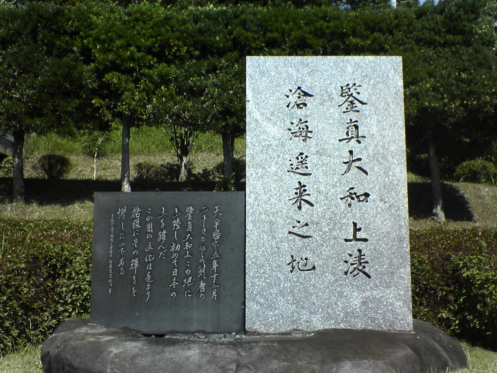
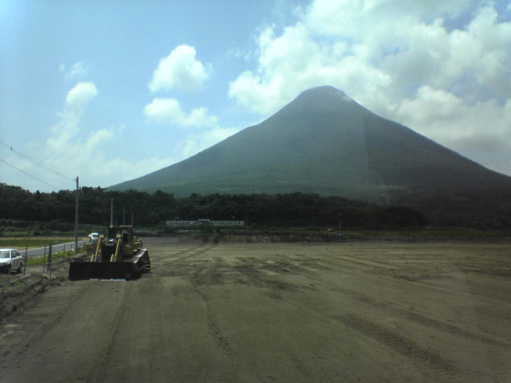

鑑真上陸の地
（鹿児島県坊津町）
|  |
《 鑑真大和上が青海原を乗り越えて
はるばるやって来たるの地 》
左の黒い石には
「天平勝宝五年十二月 / 二十日の午の刻唐の / 鑑真大和上この地に
上陸し初めて日本の / 土を踏んだ
この国の文化は是より / 格段にその輝きを / 増したのである」
とある。天平勝宝五年は西暦７３５年。
坊津の町
http://www.synapse.ne.jp/~haya/
|  |
開聞岳（９２２ｍ）
指宿（いぶすき：宗晃くんのお父さんの故郷）から
もどる（このページの上に）
左上のブラウザで「戻る」と、もとの作文のところにもどります。
「作文ワールドⅢ」へ トップページへ